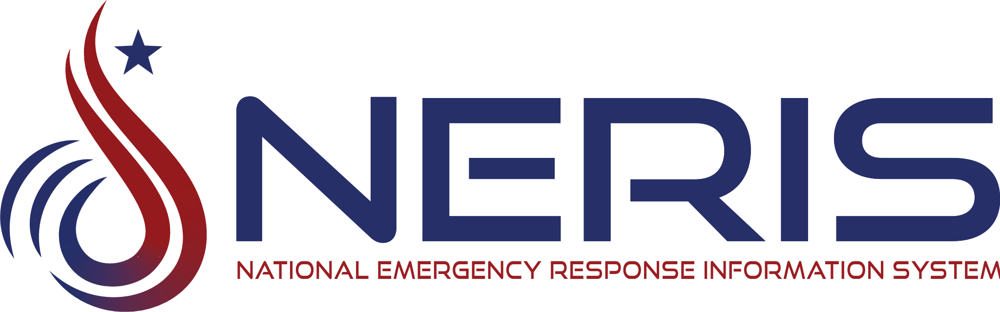

Getting Started
WARNING
These files are protected by United States Copyright laws and are intended for the sole use by Blue Devil Data customers only.
Note
All installations require either Windows 10 version 21H2 or greater (Microsoft no longer provides
support for Windows 10) or 11 and a wide screen monitor to operate properly.
See full
compatability list.

Existing customers can easily get started with the transition by completing the following.
- Log into NERIS. If you needhelp or login credentials contact OFPC: Michael Stevens at michael.stevens@dhes.ny.gov
- Download How to enroll Data Demon as your RMS integration partner.
- Check your computer requirements. Data Demon Recommended Computer Requirements
- Download and install. Data Demon 3 for NERIS Installer
- Log in to Data Demon 3 and set up your station information. Getting Started with NERIS
- We are currently testing the incident importer by county. If your county is not on this list DO NOT try to import incidents. If you use ADI to import your incicents, contact Tery Mann to get an update to ADI before importing. tmann@fdcms.com
Completed counties: Onondaga, Oswego, Wayne, Oneida, Livingston, Wyoming,
Dutches, Erie, Tompkins,
Schuyler, Chemung, Jefferson, St Lawrence, Cortland, Cayuga, Madison, Stuben, Tioga, Herkimer,
Monroe.
Importer counties to be completed next: Lewis, Onterio, Montgomery, Yates.
Attendance Demon should be completed by 12/1/25
NERIS is continously making changes to help increase the accuracy of the data collection. We are continously making changes to comply with NERIS and enhance the user experience.
Other Resources and Downloads
Application Software
-
Data Demon 3 for NERIS Installer
Compliant with the new NERIS reporting system
-
Data Demon 2 Installer
Compliant with the legacy NFIRS reporting system.
Documentation
-
New customer workbook.xlxs
Populate this Excel workbook with your existing records to preload Data Demon.
-
Member Information.pdf
Document used for gathering member information to assist in data entry.
Utility Software
-
Install Attendance Demon.exe
Requires an RFID reader to work. Contact sales to purchase a reader.
- Install remote technical support module.exe